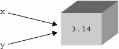

3.5. Memory ManagementSo far you have seen a large number of Python code samples. We are going to cover a few more details about variables and memory management in this section, including:
3.5.1. Variable Declarations (or Lack Thereof)In most compiled languages, variables must be declared before they are used. In fact, C is even more restrictive: variables have to be declared at the beginning of a code block and before any statements are given. Other languages, like C++ and Java, allow "on-the-fly" declarations, i.e., those which occur in the middle of a body of codebut these name and type declarations are still required before the variables can be used. In Python, there are no explicit variable declarations. Variables are "declared" on first assignment. Like most languages, however, variables cannot be accessed until they are (created and) assigned: >>> a
Traceback (innermost last):
File "<stdin>", line 1, in ?
NameError: aOnce a variable has been assigned, you can access it by using its name: >>> x = 4 >>> y = 'this is a string' >>> x 4 >>> y 'this is a string' 3.5.2. Dynamic TypingAnother observation, in addition to lack of variable declaration, is the lack of type specification. In Python, the type and memory space for an object are determined and allocated at runtime. Although code is byte-compiled, Python is still an interpreted language. On creationthat is, on assignmentthe interpreter creates an object whose type is dictated by the syntax that is used for the operand on the right-hand side of an assignment. After the object is created, a reference to that object is assigned to the variable on the left-hand side of the assignment. 3.5.3. Memory AllocationAs responsible programmers, we are aware that when allocating memory space for variables, we are borrowing system resources, and eventually, we will have to return that which we borrowed back to the system. Python simplifies application writing because the complexities of memory management have been pushed down to the interpreter. The belief is that you should be using Python to solve problems with and not have to worry about lower-level issues that are not directly related to your solution. 3.5.4. Reference CountingTo keep track of objects in memory, Python uses the simple technique of reference counting. This means that internally, Python keeps track of all objects in use and how many interested parties there are for any particular object. You can think of it as simple as card-counting while playing the card game blackjack or 21. An internal tracking variable, called a reference counter, keeps track of how many references are being made to each object, called a refcount for short. When an object is created, a reference is made to that object, and when it is no longer needed, i.e., when an object's refcount goes down to zero, it is garbage-collected. (This is not 100 percent true, but pretend it is for now.) Incrementing the Reference CountThe refcount for an object is initially set to 1 when an object is created and (its reference) assigned. New references to objects, also called aliases, occur when additional variables are assigned to the same object, passed as arguments to invoke other bodies of code such as functions, methods, or class instantiation, or assigned as members of a sequence or mapping. Let us say we make the following declarations: x = 3.14 y = x The statement x = 3.14 allocates a floating point number (float) object and assigns a reference x to it. x is the first reference, hence setting that object's refcount to one. The statement y = x creates an alias y, which "points to" the same integer object as x (see Figure 3-2). A new object is not created for y. Figure 3-2. An object with two references Instead, the only thing that happens is that the reference count for this object is incremented by one (to 2). This is one way in which an object's refcount goes up. Other ways it can increment include the object being passed into a function call, and when the object is added to a container object such as a list. In summary, an object's refcount is increased when
Now let us look at how reference counts go down. Decrementing the Reference CountWhen references to an object "go away," the refcount is decreased. The most obvious case is when a reference goes out of scope. This occurs most often when the function in which a reference is made completes. The local (automatic) variable is gone, and an object's reference counter is decremented. A reference also goes away when a variable is reassigned to another object. For example: foo = 'xyz' bar = foo foo = 123 The reference count for string object "xyz" is one when it is created and assigned to foo. It is then incremented when bar is added as an alias. However, when foo is reassigned to the integer 123, the reference count to "xyz" is decremented by one. Other ways in which an object's reference count goes down include explicit removal of a reference using the del statement (see next section), when an object is removed from a container (or if the reference count to that container itself goes to zero). In summary, an object's refcount is decreased when:
See Section 11.8 for more information on variable scope. del StatementThe del statement removes a single reference to an object. Its syntax is: del obj1[, obj2[,... objN]] For example, executing del y in the example above has two results:
Further still, executing del x will remove the final reference to the object, decrementing the reference counter to zero and causing the object to become "inaccessible" or "unreachable." It is at this point that the object becomes a candidate for garbage collection. Note that any tracing or debugging facility may keep additional references to an object, delaying or postponing that object from being garbage-collected. 3.5.5. Garbage CollectionMemory that is no longer being used is reclaimed by the system using a mechanism known as garbage collection. The interpreter keeps track of reference counts as above, but it is up to the garbage collector to deallocate the memory. The garbage collector is a separate piece of code that looks for objects with reference counts of zero. It is also responsible to check for objects with a reference count greater than zero that need to be deallocated. Certain situations lead to cycles. A cyclic reference is where you have (at least two) objects that refer to each other, and even if all other references fall by the wayside, these references still exist, meaning that reference counting alone is not good enough. Python's garbage collector is actually a combination of reference counting and the periodic invocation of a cyclic garbage collector. When an object's refcount reaches zero, the interpreter pauses to deallocate it and all objects that were reachable only from that object. In addition to this reference counting, the garbage collector also notices if a large number of objects have been allocated (and not deallocated though reference counting). In such cases, the interpreter will pause to try to clear out any unreferenced cycles. |